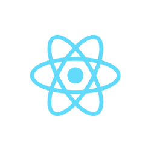
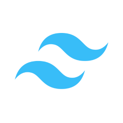
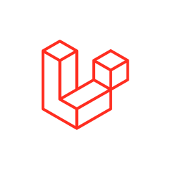
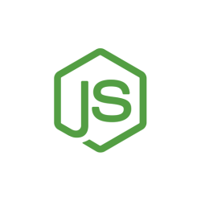

Pregledajte sve naše usluge
Pregledajte sve naše usluge

SaaS rešenja i digitalni proizvodi po meri
Pomažemo vam da ideju pretočite u proizvod: od definisanja MVP obima do stabilne platforme spremne za rast.
Proizvod koji se razvija i posle lansiranja
Razvoj digitalnih proizvoda obuhvata projektovanje i izradu SaaS platformi, MVP rešenja i softverskih proizvoda po meri, namenjenih tržištu ili internom poslovanju.
Za razliku od sajta, proizvod se ne završava lansiranjem. Razvija se kroz cikluse u kojima se odluke donose na osnovu stvarnog korišćenja, pa arhitektura od prvog dana mora da podrži promene, nove korisnike i nove funkcionalnosti.
Pomažemo vam da ideju pretočite u jasno definisan obim i tehničko rešenje. Istraživanje tržišta i poslovni model ostaju u vašoj nadležnosti, a naš fokus je na tome da proizvod bude dobro projektovan, stabilan i spreman za rast.
Tehnički list usluge
- Tipovi proizvoda
- SaaS platforme · MVP rešenja · Interni poslovni sistemi · Platforme sa korisničkim nalozima i pretplatama
- Isporuke
- Definisan MVP obim · Klikabilni prototip u Figmi · Razvijen i testiran proizvod · Admin panel · Objava na produkciji
- Tehnološka osnova
- Laravel · Node.js · React · Tailwind CSS · Druge tehnologije prema zahtevima projekta
- Faza otkrivanja
- Definisanje ciljeva, korisnika i MVP obima, bez istraživanja tržišta
- Posle lansiranja
- Podrška kroz HiStack portal · Dalji razvoj kroz nove iteracije, po dogovoru
- Vlasništvo
- Isporučeni proizvod po pravilu pripada klijentu, a uslovi se definišu ugovorom
- Model ponude
- Ponuda bez obaveze nakon konsultacija · Plaćanje u ratama za veće projekte
Šta obuhvata razvoj proizvoda
Obuhvat zavisi od faze u kojoj se proizvod nalazi. Matrica prikazuje šta je standardni deo svakog nivoa, a šta uključujemo kada projekat to zahteva. Nivoi su detaljnije opisani u sekciji Obim i poređenje.
| Aktivnost / isporuka | Prototip | MVP | Platforma za rast |
|---|---|---|---|
| Definisanje proizvoda | |||
| Ciljevi, ciljni korisnici i ključni problem | |||
| Definisanje MVP obima i prioriteta funkcionalnosti | |||
| Mapiranje korisničkih tokova i uloga | |||
| Dizajn | |||
| Klikabilni prototip ključnih tokova u Figmi | |||
| Dizajn sistem i biblioteka komponenti | |||
| Dizajn admin panela i složenih interfejsa | |||
| Razvoj | |||
| Frontend aplikacije | |||
| Backend, baza podataka i poslovna logika | |||
| Registracija, prijava, uloge i dozvole | |||
| Admin panel | |||
| Pretplate i naplata | |||
| Višekorisnička arhitektura (multi-tenancy) | |||
| API za integracije i mobilne klijente | |||
| Infrastruktura i kvalitet | |||
| Test okruženje pre objave | |||
| Pregled koda i verzionisanje | |||
| Analitika korišćenja proizvoda | |||
| Rezervne kopije i plan oporavka | |||
| Lansiranje i posle | |||
| Objava na produkciji | |||
| Podrška kroz HiStack portal | |||
| Dalji razvoj kroz nove iteracije | |||
Od ideje do zrelog proizvoda
Proizvod se razvija u petlji: izgradi se najmanja verzija koja ima vrednost, meri se kako je korisnici koriste, a naredne odluke donose se na osnovu podataka, a ne pretpostavki. Matrica zrelosti pokazuje koliko je razumno uložiti u svaku tehničku oblast u kojoj fazi.
Iterativni ciklus
01Definiši
Problem, korisnici i MVP obim
Isporuka: Lista prioriteta funkcionalnosti
Zajedno
02Izgradi
Najmanja verzija koja ima vrednost
Isporuka: Funkcionalan proizvod na produkciji
HiStack
03Meri
Kako korisnici zaista koriste proizvod
Isporuka: Podaci o ključnim događajima i povratne informacije
Zajedno
04Uči
Odluke na osnovu podataka
Isporuka: Prioriteti za narednu iteraciju
Vi, uz našu procenu
Naredna iteracija
Povratak na korak 01 u narednoj iteraciji
Matrica zrelosti proizvoda
Najčešći uzrok neuspeha tehnički dobrih proizvoda nije loš kod, već ulaganje u pogrešnu stvar u pogrešnom trenutku. Matrica prikazuje četiri faze proizvoda i za svaku od 15 tehničkih i poslovnih dimenzija navodi preporučeni nivo ulaganja i šta on konkretno podrazumeva.
| Dimenzija | PrototipProvera ideje | MVPPrvi korisnici | Rana validacijaPotvrda potrebe | SkaliranjeRast korisnika |
|---|---|---|---|---|
| Arhitektura | ||||
| Struktura koda | Bez produkcionog koda, prototip u Figmi | Modularni monolit sa jasnim granicama domena | Refaktorisanje delova koji se najčešće menjaju | Izdvajanje servisa tamo gde opterećenje to zahteva |
| Model podataka | Okvirni entiteti i njihovi odnosi | Normalizovana šema i migracije | Indeksi prema stvarnim upitima | Replike za čitanje i arhiviranje starih podataka |
| Višekorisnička arhitektura | Definisanje modela korisnika i organizacija | Izolacija podataka na nivou aplikacije | Revizija izolacije i dozvola | Jača izolacija za klijente sa strožim zahtevima |
| Infrastruktura | ||||
| Okruženja | Nisu potrebna | Odvojeno test i produkciono okruženje | Automatizovana isporuka na test okruženje | Automatizovana isporuka i brz povratak na prethodnu verziju |
| Skalabilnost | Nije potrebna | Jedan server sa rezervom kapaciteta | Keširanje i redovi za pozadinske poslove | Horizontalno skaliranje aplikativnog sloja |
| Rezervne kopije | Nisu primenljive | Redovne automatske kopije baze | Provereno vraćanje iz kopije | Plan oporavka sa definisanim RPO i RTO ciljevima |
| Kvalitet | ||||
| Testiranje | Prolazak kroz tokove prototipa | Ručno testiranje ključnih tokova i testovi kritične logike | Automatski testovi za naplatu i dozvole | Široka pokrivenost testovima u procesu isporuke |
| Pregled koda | Nije primenljiv | Pregled pre spajanja izmena | Pregled uz definisane standarde koda | Obavezan pregled uz automatske provere |
| Bezbednost | ||||
| Autentifikacija i pristup | Definisane uloge i nivoi pristupa | Bezbedna prijava, uloge i dozvole | Dvofaktorska autentifikacija za administratore | Revizija pristupa i evidencija aktivnosti |
| Zaštita podataka | Popis ličnih podataka koji će se obrađivati | Šifrovan prenos i minimalan obim podataka | Usklađivanje obrade sa ZZPL i GDPR-om | Redovne bezbednosne provere |
| Analitika i odlučivanje | ||||
| Merenje korišćenja | Definisanje ključnih metrika | Praćenje ključnih događaja | Levak konverzije i zadržavanje korisnika | Kohortna analiza i kontrolisani eksperimenti |
| Povratne informacije | Razgovori sa potencijalnim korisnicima | Kanal za prijavu problema i predloga | Sistematsko prikupljanje i prioritizacija | Ugrađeno u redovno planiranje |
| Poslovni fokus | ||||
| Ključno pitanje faze | Da li problem postoji? | Da li rešenje radi za prve korisnike? | Da li korisnici ostaju? | Da li sistem izdržava rast? |
| Fokus ulaganja | Validacija ideje | Brzina do prvih korisnika | Zadržavanje korisnika | Stabilnost i efikasnost |
| Najčešća greška | Preterano detaljan prototip | Previše funkcionalnosti pre prvih korisnika | Skaliranje pre potvrđene potrebe | Tehnički dug nasleđen iz ranih faza |
Visok nivo ulaganjaUmerenMinimalan
Ocena ovde ne izražava povoljnost, već preporučeni nivo ulaganja u datoj fazi. Matrica je orijentir, a ne pravilo: proizvodi u regulisanim oblastima ili sa osetljivim podacima zahtevaju više ulaganja u bezbednost već od prve verzije. RPO i RTO označavaju prihvatljiv gubitak podataka i vreme do ponovnog rada sistema nakon incidenta.
Arhitektura koja podnosi promene
Pregled slojeva pokazuje tehnologije koje najčešće koristimo. Kada projekat ili klijent zahteva drugačiji izbor, tim proširujemo prema potrebama projekta. Poređenje modela višekorisničke arhitekture prikazuje jednu od najvažnijih odluka kod SaaS platformi.
Slojevi rešenja
Dizajn i prototip
- Figma
Klikabilni prototip ključnih tokova i dizajn sistem koji prati proizvod kroz sve naredne iteracije.
Klijentska aplikacija

React
Tailwind CSS
Interfejs sa složenim stanjem: dashboardi, filteri, višekoračni tokovi i ažuriranje bez ponovnog učitavanja stranice.
Aplikativni sloj

Laravel
Node.js
Poslovna logika, API, autentifikacija i pozadinski poslovi poput slanja obaveštenja i obrade podataka.
Podaci
- Relaciona baza
Normalizovan model podataka sa migracijama, tako da se šema menja kontrolisano zajedno sa proizvodom.
Verzionisanje i isporuka
- GitHub
Kontrola verzija, pregled koda i odvojeno test okruženje pre svake objave.
Modeli višekorisničke arhitekture
Kada jedna platforma služi više organizacija, podaci svake od njih moraju ostati odvojeni. Izbor modela utiče na bezbednost, troškove i složenost održavanja tokom celog života proizvoda, a naknadna promena modela je skupa.
| Kriterijum | Zajednička bazaIdentifikator klijenta u svakom zapisu | Zasebna šemaJedna baza, šema po klijentu | Zasebna bazaBaza po klijentu |
|---|---|---|---|
| Bezbednost i usklađenost | |||
| Izolacija podataka | Zavisi od discipline u kodu | Fizički odvojeni podaci | |
| Strogi zahtevi klijenata | Lakše ispunjava ugovorne zahteve | ||
| Troškovi i održavanje | |||
| Trošak infrastrukture | Raste sa svakim klijentom | ||
| Migracije šeme | Jedna migracija za sve | Migracija za svaku bazu | |
| Složenost operativnog rada | |||
| Rast i prilagođavanje | |||
| Veliki broj manjih klijenata | |||
| Prilagođavanje po klijentu | |||
| Izvoz ili prenos podataka klijenta | Zahteva filtriranje zapisa | ||
| Primena | |||
| Tipična primena | SaaS sa mnogo malih i srednjih organizacija | Platforme sa umerenim brojem poslovnih klijenata | Manji broj velikih klijenata sa strogim zahtevima |
NajpovoljnijeUmerenoNajmanje povoljno
Ocena izražava povoljnost za dati kriterijum. Moguć je i hibridni pristup, u kom većina klijenata deli bazu, a zahtevni klijenti dobijaju zasebnu.
Katalog modula SaaS platforme
Pregled modula koje digitalni proizvodi najčešće zahtevaju. Složenost pokazuje relativan obim implementacije i direktno utiče na rok i cenu projekta.
| Modul | Šta obuhvata | Implementacija | Složenost |
|---|---|---|---|
| Korisnici i pristup | |||
| Registracija i prijava | Verifikacija email adrese, oporavak lozinke i zaštita od zloupotrebe | Laravel autentifikacija | |
| Uloge i dozvole | Uloge po organizaciji, dozvole po resursu i provera na serveru | Politike pristupa po ulozi | |
| Timovi i pozivnice | Pozivanje članova, prihvatanje pozivnice i upravljanje članstvom | Laravel, React interfejs | |
| Dvofaktorska autentifikacija | Druga potvrda identiteta pri prijavi, obavezna za administratore | Aplikacija za autentifikaciju | |
| Naplata | |||
| Pretplatni planovi | Planovi, probni period, nadogradnja, otkazivanje i ograničenja po planu | Integracija platnog procesora | |
| Računi i istorija plaćanja | Pregled transakcija, preuzimanje računa i obaveštenja o plaćanju | Integracija platnog procesora | |
| Proizvod | |||
| Onboarding | Vođeni prvi koraci i početno podešavanje naloga | React interfejs | |
| Obaveštenja | Email i obaveštenja u aplikaciji, sa podešavanjima po korisniku | Pozadinski poslovi i redovi | |
| Pretraga i filtriranje | Pretraga podataka uz filtere, sortiranje i sačuvane prikaze | Ugrađena pretraga ili namenski indeks | |
| Uvoz i izvoz podataka | Uvoz iz CSV datoteka uz validaciju i izvoz podataka organizacije | Pozadinski poslovi | |
| Administracija | |||
| Admin panel | Upravljanje korisnicima, organizacijama, planovima i sadržajem | Laravel admin panel | |
| Evidencija aktivnosti | Zapis ključnih radnji: ko je, šta i kada promenio | Laravel događaji | |
| Integracije i analitika | |||
| Javni API | Dokumentovan API sa ključevima pristupa i ograničenjem broja zahteva | Laravel ili Node.js | |
| Webhookovi | Obaveštavanje spoljnih sistema o događajima u proizvodu | Pozadinski poslovi i ponovni pokušaji | |
| Analitika korišćenja | Praćenje ključnih događaja i korišćenja funkcionalnosti | Analitički alat ili sopstveno rešenje | |
Izbor platnog procesora zavisi od zemlje u kojoj je registrovan pravni subjekt koji naplaćuje pretplate i od valuta u kojima se naplaćuje. Zato ga definišemo na početku projekta.
Parametri koje proveravamo pre objave
Kod digitalnih proizvoda najveći rizici su u kontroli pristupa i podacima korisnika. Tamo gde postoje javno definisani standardi, oslanjamo se na njih umesto na sopstvene, neproverljive tvrdnje.
| Parametar | Ciljna vrednost | Metod provere |
|---|---|---|
| Bezbednost | ||
| Referentni okvir | OWASP Top 10 | Pregled ključnih rizika |
| Lozinke | Heširanje savremenim algoritmom (bcrypt ili Argon2) | Pregled koda |
| Kontrola pristupa | Provera dozvola na serveru za svaki zahtev | Pregled koda i testiranje po ulogama |
| API | Autentifikacija i ograničenje broja zahteva | Pregled konfiguracije |
| Podaci | ||
| Izolacija između klijenata | Podaci jedne organizacije nedostupni drugoj | Testiranje pristupa između organizacija |
| Prenos podataka | HTTPS za aplikaciju i API | Provera sertifikata i preusmerenja |
| Lični podaci | Usklađenost sa ZZPL, a sa GDPR-om kada je primenljiv | Pregled obrade podataka |
| Kvalitet isporuke | ||
| Verzionisanje | Sav kod u repozitorijumu, sa istorijom izmena | GitHub |
| Pregled koda | Izmene se pregledaju pre spajanja | Pregled zahteva za spajanje |
| Test okruženje | Izmene se proveravaju pre objave na produkciji | Pregled na test okruženju |
| Iskustvo korišćenja | ||
| Performanse javnog dela | LCP ≤ 2,5 s · INP ≤ 200 ms · CLS ≤ 0,1 | PageSpeed Insights, Lighthouse |
| Pristupačnost | WCAG 2.2, nivo AA kao ciljni nivo | Automatska provera i ručni pregled |
| Uređaji | Desktop, tablet i telefon, sa namenskim rasporedom | Testiranje na uređajima i emulacija |
Ciljne vrednosti za Core Web Vitals odgovaraju pragovima koje Google definiše kao dobre, mereno na 75. percentilu poseta. Za dodatne zahteve, poput dostupnosti sistema ili vremena odziva, ciljne vrednosti definišemo posebno za svaki projekat. ZZPL: Zakon o zaštiti podataka o ličnosti Republike Srbije.
Proces rada po fazama
Svaka faza ima jasnu isporuku i kontrolnu tačku. Razvoj se odvija u etapama, tako da funkcionalnosti pregledate dok nastaju, a ne tek na kraju. Detaljan vodič kroz saradnju dostupan je na stranici Proces saradnje.
| Faza | Aktivnosti | Isporuka | Vaše učešće | Kontrolna tačka |
|---|---|---|---|---|
| 01Definisanje proizvoda | Razgovor o cilju, korisnicima i problemu, definisanje MVP obima i prioriteta | Definisan obim i lista prioriteta | Poznavanje tržišta i korisnika, odluke o prioritetima | Odobrenje obima i ponude |
| 02Prototip i dizajn | Klikabilni prototip ključnih tokova u Figmi, zatim dizajn interfejsa | Odobren prototip i dizajn | Pregled tokova, po mogućnosti uz potencijalne korisnike | Odobrenje dizajna |
| 03Razvoj u etapama | Razvoj funkcionalnosti na test okruženju, uz pregled nakon svake etape | Funkcionalan proizvod za pregled | Pregled i prihvatanje etapa | Prihvatanje etape |
| 04Testiranje i lansiranje | Provera ključnih tokova, dozvola i naplate, zatim objava na produkciji | Objavljen proizvod | Završni pregled | Odobrenje za objavu |
| 05Podrška i dalji razvoj | Podrška kroz HiStack portal i nove iteracije, po dogovoru | Praćenje prijava i plan narednih iteracija | Prioriteti za naredne iteracije | Kontinuirano |
Obim proizvoda i izbor pristupa
Obim proizvoda određuju broj i složenost funkcionalnosti, a ne broj ekrana. Zato nakon konsultacija pripremamo ponudu prilagođenu fazi u kojoj se proizvod nalazi.
Prototip
Klikabilni prototip ključnih tokova
Provera ideje i korisničkih tokova pre ulaganja u razvoj.
Pogodno kada ideju želite da pokažete korisnicima ili investitorima pre razvoja.
MVP
Prva funkcionalna verzija
Ključne funkcionalnosti, korisnički nalozi i admin panel, spremni za prve korisnike.
Pogodno kada je ideja definisana i treba je proveriti na tržištu.
Platforma za rast
Proizvod spreman za skaliranje
Pretplate, višekorisnička arhitektura, API i analitika korišćenja.
Pogodno kada proizvod ima korisnike i treba da podrži rast.
Za veće projekte moguće je plaćanje u ratama.
No-code, low-code ili razvoj po meri
Svaki pristup ima svoje mesto. Istaknuto polje označava najpovoljniju opciju za dati kriterijum, i to nije uvek razvoj po meri.
| Kriterijum | No-code platformaNpr. Bubble | Low-code platformaVizuelni alat uz dodatni kod | Razvoj po meriHiStack |
|---|---|---|---|
| Početni trošak | Najpovoljnije: Najniži | Nizak do umeren | Viši, prema obimu |
| Vreme do prve verzije | Najpovoljnije: Najkraće | Kratko | Prema obimu |
| Složena poslovna logika | Ograničena mogućnostima platforme | Delimično, uz dodatni kod | Najpovoljnije: Bez ograničenja platforme |
| Performanse pri rastu | Zavise od platforme | Zavise od platforme | Najpovoljnije: Optimizuju se prema opterećenju |
| Vlasništvo nad kodom | Aplikacija postoji samo na platformi | Zavisi od uslova platforme | Najpovoljnije: Po pravilu pripada klijentu, prema ugovoru |
| Vezanost za platformu | Visoka, prelazak znači novu izradu | Umerena do visoka | Najpovoljnije: Bez vezanosti za platformu treće strane |
| Troškovi rasta | Rastu sa planom i brojem korisnika | Licence po korisniku ili aplikaciji | Najpovoljnije: Prvenstveno trošak infrastrukture |
| Održavanje infrastrukture | Najpovoljnije: Održava platforma | Uglavnom održava platforma | Podrška kroz HiStack portal |
No-code platforma je dobar izbor za brzu proveru ideje uz mali budžet. Ako je to ono što vam treba, reći ćemo vam to otvoreno i pomoći da eventualni kasniji prelazak na razvoj po meri bude planiran.